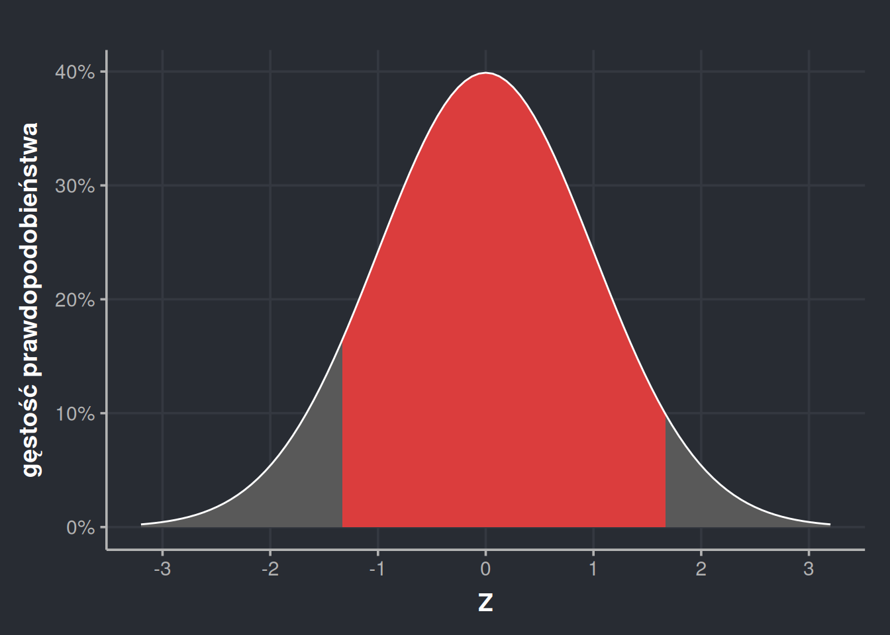

Istnieje szczególny rodzaj wykresów zwany wykresami gęstości. A nie jest to pierwszy lepszy wykres – wykresy gęstości prawdopodobieństwa to fundament całej statystyki. I bardzo łatwo jest czytać je źle. Dlatego w tym wpisie omawiam, jak czytać takie wykresy i jak je liczyć. Jest to łagodne wprowadzenie do rozkładu normalnego i jego dystrybuanty.
Autor
Jakub Jędrusiak
Opublikowano
27 sierpnia 2023
Pomimo tego, że rozkład normalny jest podstawą statystyki jako takiej, nie trzeba go głęboko rozumieć, żeby używać statystyki. Jest to użyteczna wiedza, którą musimy posiąść, jeśli naprawdę chcemy rozumieć, co robimy. Jednak da się żyć i sprawnie wyciągać wnioski statystyczne i bez tej wiedzy. Ten wpis można potraktować więc jako spojrzenie w głębię statystyki, ale na pierwsze zetknięcie z tą dziedziną znacznie lepiej przeczytać wpisy o wariancji i o wartości \(p\).
1 Histogramy i gęstość prawdopodobieństwa
Wyobraźmy sobie, że losujemy 2000 osób i robimy im test inteligencji, np. WAIS-R. Jedno takie badanie trwa 60-90 minut, więc po ponad roku nierobienia niczego innego mamy całą dużą bazę wyników surowych. Przeliczamy, jak naszym badanym poszło, patrzymy w tabelki z normami i dla każdej osoby badanej uzyskujemy wynik na specjalnej skali do wyrażania inteligencji. Skala ta jest zrobiona tak, żeby światowa średnia inteligencja zawsze wynosiła \(\mu = 100\), a odchylenie standardowe \(\sigma = 15\). Na razie nie jest ważne, czym jest odchylenie standardowe matematycznie (zainteresowanym polecam wpis o wariancji). Chodzi w nim mniej więcej o to, że większość populacji (około \(\frac{2}{3}\)) ma wyniki między 85 a 115, czyli 100±15. Wyniki przedstawiamy na histogramie.
Kod
p_tys <-tibble(IQ =rnorm(2000, 100, 15))ggplot(p_tys, aes(IQ)) +geom_histogram(binwidth =20, fill ="gray95", colour ="black") +ylim(0, 1100) +labs(x ="IQ", y ="liczba osób w próbce") +theme_Publication()
Rysunek 1: Histogram inteligencji w próbie 2000 osób. Wynik na osi Y to liczba osób, których inteligencja mieści się w danych widełkach. Szerokość jednego słupka to 20 punktów.
Kod
ggplot(p_tys, aes(IQ)) +geom_histogram(binwidth =20, colour ="white") +ylim(0, 1100) +labs(x ="IQ", y ="liczba osób w próbce") +theme_dark_blue()
Rysunek 2: Histogram inteligencji w próbie 2000 osób. Wynik na osi Y to liczba osób, których inteligencja mieści się w danych widełkach. Szerokość jednego słupka to 20 punktów.
Jak czytać coś takiego? Każdy słupek to pewne widełki. Tutaj ustawiłem te widełki na szerokość 20 punktów. I tak na przykład środkowy słupek to widełki 90-110. Z osi Y naszego histogramu możemy odczytać, że takich osób w naszej próbce było trochę ponad 900. W widełkach 70-90 i 110-130 uplasowało się trochę po prawie 500 osób itd. Fakt, że w histogramie każdy słupek reprezentuje wartości od-do jest niepozorny, ale potem okaże się bardzo ważny.
Zamiast prezentować bezwzględne liczby możemy użyć proporcji. Trochę ponad 900 osób to w naszej próbce trochę mniej niż 50%. Jest to wygodne, ponieważ odcina trochę sam histogram od wielkości próby. Ponieważ próba ma być tylko przybliżeniem prawdziwej populacji, to ostatecznie nie interesuje nas, ile osób w próbie miało inteligencję między 90 a 110, tylko jaki procent osób w całej Polsce ma inteligencję między 90 a 110. Z naszej próby możemy wnioskować, że takich osób jest trochę mniej niż 50%.
Kod
ggplot(p_tys, aes(IQ)) +geom_histogram(aes(y =after_stat(count /sum(count))), binwidth =20, fill ="gray95", colour ="black") +labs(x ="IQ", y ="odsetek osób w próbce") +scale_y_continuous(labels = scales::percent, limits =c(0, 0.6)) +theme_Publication()
Rysunek 3: Tym razem na osi Y umieściłem nie liczebność danej grupy, a jaki procent stanowi ona w całej próbie.
Kod
ggplot(p_tys, aes(IQ)) +geom_histogram(aes(y =after_stat(count /sum(count))), binwidth =20, colour ="white") +labs(x ="IQ", y ="odsetek osób w próbce") +scale_y_continuous(labels = scales::percent, limits =c(0, 0.6)) +theme_dark_blue()
Rysunek 4: Tym razem na osi Y umieściłem nie liczebność danej grupy, a jaki procent stanowi ona w całej próbie.
Takie przedstawienie sprawy odblokowuje nam nowy sposób myślenia o tym rozkładzie – jeśli miałbym teraz losowo wybrać jedną osobę z tej grupy, to mam trochę mniej niż 50% szans, że będzie z widełek 90-110, trochę ponad 20%, że będzie z widełek 110-130 itd. Ta zmiana osi Y sprawiła, że możemy patrzeć na nasz histogram jako na histogram prawdopodobieństwa.
Słupki możemy też do siebie dodawać, np. skoro widełki 90-110 mają prawdopodobieństwo 47%, a widełki 110-130 mają prawdopodobieństwo 24%, to łącznie widełki 90-130 mają prawdopodobieństwo 71%.
Możemy jednak być niezadowoleni z tej dokładności. Co jeśli chcę określić, jaką mam szansę znaleźć osobę z węższych widełek, np. 95-105? Nasze słupki są zbyt szerokie, żeby to stwierdzić, ale możemy je zawęzić i uzyskać dokładniejszy obraz.
Kod
ggplot(p_tys, aes(IQ)) +geom_histogram(aes(y =after_stat(count /sum(count))), binwidth =10, fill ="gray95", colour ="black") +labs(x ="IQ", y ="odsetek osób w próbce") +scale_y_continuous(labels = scales::percent, limits =c(0, 0.3)) +theme_Publication()
Rysunek 5: Zmniejszenie szerokości słupków (tutaj do 10) sprawia, że histogram jest dokładniejszy. Każdy słupek z osobna ma też mniejsze prawdopodobieństwo.
Kod
ggplot(p_tys, aes(IQ)) +geom_histogram(aes(y =after_stat(count /sum(count))), binwidth =10, colour ="white") +labs(x ="IQ", y ="odsetek osób w próbce") +scale_y_continuous(labels = scales::percent, limits =c(0, 0.3)) +theme_dark_blue()
Rysunek 6: Zmniejszenie szerokości słupków (tutaj do 10) sprawia, że histogram jest dokładniejszy. Każdy słupek z osobna ma też mniejsze prawdopodobieństwo.
Na powyższym rysunku każdy słupek ma szerokość 10, więc nasze widełki skurczyły się do 95-105, 105-115, 115-130 itd. Warto też zwrócić uwagę, że każdy ze słupków stał się niższy. Łączne prawdopodobieństwo musi zawsze wynosić 100%, więc gdy rozbijam tę wartość na więcej kawałków, to każdy kawałek musi być, siłą rzeczy, mniejszy. Widać to na kolejnym rysunku, gdzie nakładam na siebie szerszy i węższy histogram.
Kod
ggplot(p_tys, aes(IQ)) +geom_histogram(aes(y =after_stat(count /sum(count))), binwidth =20, fill ="gray95", colour ="black", alpha =0.5) +geom_histogram(aes(y =after_stat(count /sum(count))), binwidth =10, fill ="gray75", colour ="black", alpha =0.5) +labs(x ="IQ", y ="odsetek osób w próbce") +scale_y_continuous(labels = scales::percent, limits =c(0, 0.6)) +theme_Publication()
Rysunek 7: Po nałożeniu na siebie histogramów widać, jak się różnią.
Kod
ggplot(p_tys, aes(IQ)) +geom_histogram(aes(y =after_stat(count /sum(count))), binwidth =20, colour ="white") +geom_histogram(aes(y =after_stat(count /sum(count))), binwidth =10, fill ="gray95", colour ="white", alpha =0.5) +labs(x ="IQ", y ="odsetek osób w próbce") +scale_y_continuous(labels = scales::percent, limits =c(0, 0.6)) +theme_dark_blue()
Rysunek 8: Po nałożeniu na siebie histogramów widać, jak się różnią.
A co jeśli taka dokładność też mnie nie zadowala? Mogę spróbować zmniejszyć dokładność do jednego punktu. Wtedy będę mógł liczyć prawdopodobieństwo dla dowolnych widełek.
Kod
ggplot(p_tys, aes(IQ)) +geom_histogram(aes(y =after_stat(count /sum(count))), binwidth =1, fill ="gray95", colour ="black", linewidth =0.1) +labs(x ="IQ", y ="odsetek osób w próbce") +scale_y_continuous(labels = scales::percent, limits =c(0, 0.03)) +theme_Publication()
Rysunek 9: Ten histogram ma już bardzo wąskie słupki, bo o szerokości zaledwie 1 punktu. Maksymalne prawdopodobieństwo wynosi już poniżej 3%.
Kod
ggplot(p_tys, aes(IQ)) +geom_histogram(aes(y =after_stat(count /sum(count))), binwidth =1, colour ="white", linewidth =0.1) +labs(x ="IQ", y ="odsetek osób w próbce") +scale_y_continuous(labels = scales::percent, limits =c(0, 0.03)) +theme_dark_blue()
Rysunek 10: Ten histogram ma już bardzo wąskie słupki, bo o szerokości zaledwie 1 punktu. Maksymalne prawdopodobieństwo wynosi już poniżej 3%.
Super, może nie jest to zbyt wygodny wykres, ale dodając do siebie słupki możemy wyliczyć prawdopodobieństwo dowolnego wyniku, np. widełek 101-103. WAIS-R pozwala nam uzyskać wyniki z dokładnością do 1 punktu, więc niżej nie ma po co schodzić. Chyba że…
Owszem, nasze testy inteligencji dają wyniki z określoną dokładnością, ale zakładamy, że inteligencja istnieje naprawdę. Teoretycznie ludzie mogą się różnić inteligencją o pół punktu, ale nie mamy narzędzi, żeby to wykryć. Możemy też sobie wyobrazić, że mierzymy zmienne, które rzeczywiście są ciągłe, np. reakcję skórno-galwaniczną (wskaźnik stresu), rozszerzenie źrenic, tempo oddechu itd. Źrenice naprawdę mogą rozszerzyć się o kolejne 0,0001 mm i tylko od naszej aparatury pomiarowej zależy, czy będziemy w stanie to wykryć. Może więc istnieć sens zwężania naszych słupków jeszcze bardziej i bardziej i bardziej, aż w końcu będą one nieskończenie cienkie i zleją się ze sobą tworząc ciągłą linię. Taki wykres nazywamy wykresem gęstości. Gdy na osi Y mamy procenty, możemy mówić o wykresie gęstości prawdopodobieństwa.
Rysunek 11: Wykres gęstości prawdopodobieństwa na podstawie naszej próbki, który możemy rozumieć jako histogram ze słupkami tak cienkimi, że zlewają się w jedno pole.
Rysunek 12: Wykres gęstości prawdopodobieństwa na podstawie naszej próbki, który możemy rozumieć jako histogram ze słupkami tak cienkimi, że zlewają się w jedno pole.
Powyższy wykres gęstości jest ilustracją naszej próbki. Każda taka próbka będzie się różniła co do szczegółów, więc i wykresy gęstości mogą wyglądać różnie. Nasza próbka liczyła sobie 2000 osób, ale możemy się domyślać, że próbka 3000 osób da dokładniejsze wyniki. 4000 osób da jeszcze dokładniejsze wyniki. 10 000 osób jeszcze dokładniejsze itd. Ostatecznie taki rozkład będzie się zbliżał do równiutkiego, regularnego kształtu zwanego krzywą dzwonową. Rozkład o takim kształcie nazywamy rozkładem normalnym.
Kod
ggplot(p_tys, aes(IQ)) +geom_area(stat ="function", fun = dnorm, args =list(mean =100, sd =15), fill ="gray95", colour ="black") +labs(x ="IQ", y ="gęstość prawdopodobieństwa") +scale_y_continuous(labels = scales::percent, limits =c(0, 0.03)) +theme_Publication()
Rysunek 13: Wykres gęstości prawdopodobieństwa z rozkładu normalnego ma kształt krzywej dzwonowej.
Kod
ggplot(p_tys, aes(IQ)) +geom_area(stat ="function", fun = dnorm, args =list(mean =100, sd =15), fill ="#595959", colour ="white") +labs(x ="IQ", y ="gęstość prawdopodobieństwa") +scale_y_continuous(labels = scales::percent, limits =c(0, 0.03)) +theme_dark_blue()
Rysunek 14: Wykres gęstości prawdopodobieństwa z rozkładu normalnego ma kształt krzywej dzwonowej.
2 Gęstość prawdopodobieństwa vs. prawdopodobieństwo
Dokładny wykres gęstości prawdopodobieństwa pozwala nam liczyć prawdopodobieństwo dla dowolnych zakresów z dowolną dokładnością. Zyskaliśmy więc olbrzymie możliwości! Czai się tutaj jednak pewna pułapka. Gdy patrzymy na nasz wykres gęstości, chciałoby się powiedzieć, że szansa na to, że ktoś będzie miał inteligencję równą 100 wynosi ok. 2,5%.
Tabela 1: Wartości z osi Y dla IQ między 95 a 105 co 0.25.
X
Y
1
95.00
0.0251589
2
95.25
0.0252955
3
95.50
0.0254259
4
95.75
0.0255498
5
96.00
0.0256671
6
96.25
0.0257779
7
96.50
0.0258819
8
96.75
0.0259792
9
97.00
0.0260695
10
97.25
0.0261529
11
97.50
0.0262293
12
97.75
0.0262986
13
98.00
0.0263608
14
98.25
0.0264158
15
98.50
0.0264635
16
98.75
0.0265040
17
99.00
0.0265371
18
99.25
0.0265629
19
99.50
0.0265814
20
99.75
0.0265925
21
100.00
0.0265962
22
100.25
0.0265925
23
100.50
0.0265814
24
100.75
0.0265629
25
101.00
0.0265371
26
101.25
0.0265040
27
101.50
0.0264635
28
101.75
0.0264158
29
102.00
0.0263608
30
102.25
0.0262986
31
102.50
0.0262293
32
102.75
0.0261529
33
103.00
0.0260695
34
103.25
0.0259792
35
103.50
0.0258819
36
103.75
0.0257779
37
104.00
0.0256671
38
104.25
0.0255498
39
104.50
0.0254259
40
104.75
0.0252955
41
105.00
0.0251589
To są dokładne wartości z osi Y dla 41 różnych punktów z osi X. Zaczynamy od 95 i dochodzimy do 105 co 0,25. Załóżmy, że chcemy policzyć prawdopodobieństwo, że losowa osoba znajdzie się w widełkach 95-105. Innymi słowy jaka część naszej próbki wykazała inteligencję między 95 a 105. Z wykresu 5. spodziewamy się, że wyjdzie około 25%. Dodajemy więc zgromadzone w tabeli wartości i wychodzi nam, że nasze prawdopodobieństwo wynosi 107%. Chwila, co?
Rzeczywiście nie ma to sensu. Nie dość, że prawdopodobieństwo jako takie nie może być większe niż 100%, to wychodzi też na to, że 107% naszej próbki miało inteligencję z przedziału 95-105. To nie tylko nie ma sensu, ale przecież jest jeszcze cała reszta rozkładu. Ba! między punktem 100 i 101 jest nieskończona liczba punktów! Jeśli zamiast co 0,25 wykorzystałbym krok 0,1, prawdopodobieństwo wzrosłoby do 264%, zaś przy kroku 0,01, wyniesie 2614%! Dlaczego tak się dzieje?
Przypomnijmy sobie rysunek 7. Zauważyliśmy na nim, że im węższe są nasze słupki, tym każdy pojedynczy słupek musi być niższy, żeby zawsze dodawały się one do 100%. Nagle jednak stwierdziłem, że zrobię słupki nieskończenie cienkie. Idąc wcześniejszą logiką, automatycznie powinny się one stać nieskończenie niskie. Jednak gdy program statystyczny liczy wykres gęstości prawdopodobieństwa, korzysta z zaawansowanych matematycznie narzędzi, które pozwalają uzyskać efekt ciągłej linii bez redukcji pojedynczych prawdopodobieństw do zera. I musimy o tym pamiętać, gdy korzystamy z tych wykresów.
To, co możemy odczytać z osi Y, określamy angielskim słowem likelihood, co bywa tłumaczone jako właśnie gęstość prawdopodobieństwa albo wiarygodność. Nas jednak nie obchodzi gęstość prawdopodobieństwa tylko prawdziwe prawdopodobieństwo! To, co intuicyjnie rozumiemy przez prawdopodobieństwo, oddaje angielski termin probability i jest zupełnie czymś innym niż likelihood. Dla poprawnego zrozumienia wykresów gęstości to rozróżnienie jest absolutnie kluczowe – gęstość prawdopodobieństwa i prawdopodobieństwo to dwie różne rzeczy! Gęstość prawdopodobieństwa możemy odczytać z osi Y, a skąd wziąć prawdopodobieństwo?
Wykres gęstości możemy wyobrazić sobie jako histogram. Jak w każdym histogramie, potrzebujemy jakichś widełek, żeby móc odczytywać dane. A niech będą cieniutkie, ale jakieś są potrzebne. W poprzednim przykładzie założyliśmy sobie widełki 95-105 i próbowaliśmy dodawać do siebie cienkie prostokąty między tymi wartościami. Istnieje jednak bardzo duża różnica pomiędzy cienkimi a nieskończenie cienkimi prostokątami! Skoro są nieskończenie cienkie, to jest ich też nieskończona liczba. A jak dodać do siebie nieskończoną liczbę nieskończenie cienkich prostokątów i przy okazji nie otrzymać nieskończenie wielkiej wartości? Wydaje się to niemożliwe, ale matematyka jest jak matka pięcioraczków – ma swoje sposoby.
3 Prawdopodobieństwo z wykresów gęstości
Tak jak wcześniej powiedziałem, jeśli chcemy z wykresu gęstości otrzymać prawdopodobieństwo, to – jak przy każdym histogramie – musimy mieć jakieś widełki. Normalnie są one określone szerokością słupka, ale tutaj możemy ustalić je samodzielnie. Mogą to być widełki pomiędzy określonymi wartościami, np. IQ 95-105, ale też nierówności typu „IQ mniejsze od 85” albo „IQ większe niż 130”. Najpierw nauczymy się takie prawdopodobieństwa szacować, potem zapisywać w sposób matematyczny, a na koniec nauczymy się liczyć je z większą dokładnością.
3.1 Szacowanie prostokątami Riemanna
Załóżmy ponownie, że chcemy policzyć, jaka część populacji wykazuje inteligencję między 95 a 105. Od razu podam odpowiedź – 26,11%. Nic nam po samej odpowiedzi, jeśli nie umiemy tego liczyć, ale miejmy to w głowie. Za moment będziemy określać te wartości z pewnym przybliżeniem, więc dobrze jest znać dokładną wartość, żeby móc stwierdzić, czy dobrze przybliżyliśmy. Zaznaczmy sobie na wykresie przestrzeń, o którą nam chodzi.
Kod
normal <-list(stat ="function", fun = dnorm, args =list(mean =100, sd =15))ggplot(p_tys, aes(IQ)) +exec(geom_area, !!!normal, fill ="gray95") +exec(geom_area, !!!normal, fill ="#DB3D3D", xlim =c(95, 105)) +stat_function(fun = dnorm, args =list(mean =100, sd =15)) +labs(x ="IQ", y ="gęstość prawdopodobieństwa") +scale_y_continuous(labels = scales::percent, limits =c(0, 0.03)) +theme_Publication()
Żeby odczytać prawdopodobieństwo z takiego wykresu, musimy oszacować, wielkość przestrzeni, którą zaznaczyłem na czerwono. Wielkość przestrzeni, czyli… pole. Na czerwono zaznaczony jest prawie prostokąt, tylko ma brzuszek na górze. Jeśli będę mógł oszacować pole tego prostokąta, to to pole właśnie będzie naszym prawdopodobieństwem. Jak więc to zrobić? Bardzo z grubsza możemy brzuszek zignorować i udawać, że jest to rzeczywiście prostokąt.
Szerokość tego prostokąta wynosi 10 (bo od 95 do 105 na osi X), zaś jego wysokość odczytujemy z osi Y, czyli jest taka, jak gęstość prawdopodobieństwa dla \(x = 100\). Odczytywanie tej wielkości z wykresu szybko robi się niepraktyczne, dlatego możemy ją wyliczyć. Możemy to zrobić podstawiając bezpośrednio do wzoru (który wygląda tak strasznie, że go nie pokażę), wykorzystując funkcję dnorm(100, 100, 15) w R (pierwszy argument to wartość, drugi to średnia, trzeci odchylenie standardowe), korzystając z internetowego kalkulatora albo kalkulatora naukowego. Możemy teraz skorzystać ze wzoru na pole prostokąta i, po wybiciu się z flashbacków ze szkoły podstawowej, otrzymać wynik:
Nieźle! Pomimo tak zgrubnego oszacowania, błąd wynosi mniej niż 1 punkt procentowy. Tworzy nam się więc schemat – wystarczy pomnożyć gęstość prawdopodobieństwa przez szerokość widełek i wyjdzie! Co nie? No i tak, i nie. Powyższy przykład pokazuje, że czasem to zadziała. Zobaczmy jednak, co się stanie, jak będziemy chcieli tak oszacować wartość dla szerszego przedziału 70-130.
Wysokość się nie zmieniła, zaś szerokość wzrosła do 60. Przemnożenie tych wartości da nam prawdopodobieństwo 159,58%. No. Przesadziliśmy odrobinę. Jak widać na wykresie, nasz prostokąt wystaje poza krzywą tak bardzo, że aż jego pole jest większe niż 100%. To może zmieńmy strategię i wciśnijmy nasz prostokąt pod krzywą, żeby na pewno nie wystawał?
Wysokość tego prostokąta równa jest gęstości prawdopodobieństwa w punktach 70 i 130. Nie jest istotne, który wybierzemy, bo rozkład normalny jest symetryczny. Ponieważ oba te są tak samo oddalone od środka (o 30 punktów), mają taką samą wysokość. Policzenie pola naszego prostokąta ujawnia nam to, co widać już na oko, czyli że pole jest znacznie zaniżone, bowiem wychodzi \(P \approx 60 \times 0,0036 = 0,216 = 21,6\%\). Wiemy więc tyle, że nasze pole jest nie mniejsze niż 0,216 i nie większe niż 1,6. Super. Tyle to widzę na oko.
Możemy jednak zmienić strategię i zamiast wyznaczać pole jednego dużego prostokąta, podzielić go wiele małych. Na przykład nasz przedział możemy rozbić na 7 prostokątów po 101. W ten sposób wykres gęstości zaczyna trochę przypominać histogram, ale trzeba pamiętać, że po to rysujemy prostokąty, żeby policzyć pole. Wartość z osi Y ciągle nie jest prawdopodobieństwem.
# definicja zmiennej `riemann` w trybie dziennymggplot(p_tys, aes(IQ)) +exec(geom_area, !!!normal, fill ="#595959", colour ="white") +geom_col(data = riemann, aes(X, Y), fill ="#DB3D3D", colour ="#8F1A1A", alpha =0.25, width =resolution(riemann$X)) +labs(x ="IQ", y ="gęstość prawdopodobieństwa") +scale_y_continuous(labels = scales::percent, limits =c(0, 0.03)) +theme_dark_blue()
Nasze prostokąty mają środki w punktach 70, 80, 90, 100, 110, 120 i 130. Gdy policzymy gęstość prawdopodobieństwa dla każdego z tych punktów i przemnożymy przez szerokość 10, to wychodzi nam pole \(P \approx 0,9826 = 98,26\%\). Wartość prawdziwa to \(P \approx 0,9545\), więc błąd ewidentnie zmalał. I maleje bardziej, gdy narysujemy jeszcze cieńsze prostokąty.
Wróćmy pamięcią do tabeli 1. Zaznaczyłem tam 41 punktów od 95 do 105 licząc co 0,25. Następnie zsumowałem te wartości i otrzymałem 107%. Ale wyobraźmy sobie to, co zrobiłem, nieco inaczej. Wyznaczyłem wysokość 41 prostokątów, z których każdy miał szerokość 0,25. Następnie dodałem wszystkie wysokości, ale zignorowałem szerokość. Jeśli teraz uwzględnię, że liczę pole i każdy prostokąt2 przemnożę przez 0,25, to powinienem otrzymać niezłe oszacowanie! I rzeczywiście, 41 prostokątów o szerokości 0,25 pozwala nam oszacować powierzchnię między 95 a 105 na 26,74%. W porównaniu z prawdziwą wartością 26,11%, wygląda to całkiem przyzwoicie.
3.2 Zapis całkowy
Szacowanie pola pod krzywą za pomocą prostokątów Riemanna, czyli to, co zrobiliśmy wyżej, to stara i skuteczna metoda. Jeśli chcemy otrzymać naprawdę dokładne wartości, możemy dzielić pole na setki, tysiące, miliony prostokątów i uzyskać przez to dowolną dokładność naszego oszacowania. Technicznie jednak żadna z tych wartości nie będzie doskonale dokładna. Nie ma to praktycznego znaczenia, ale jeśli chcemy zachować matematyczną czystość, musimy skorzystać z pewnego szczególnego zapisu.
Wiemy już, że prostokąty pod krzywą są nieskończenie cienkie. Wiemy też, że wzór na pole prostokąta to długość razy szerokość. Spójrzmy na taki „nieskończenie” cienki prostokąt.
Wysokość tego prostokąta to gęstość prawdopodobieństwa dla \(IQ = 100\). Możemy zapisać to pewną przerażająco wyglądającą notacją \(\mathcal{N}(100;\ 100,\ 15^2)\). Oznacza to „wartość rozkładu normalnego o średniej \(\mu = 100\) i wariancji \(\sigma^2 = 15^2\) w punkcie \(x = 100\)”. Każdy rozkład normalny daje się dokładnie opisać dwiema liczbami – średnią i odchyleniem standardowym. Jak znam te dwie rzeczy, mogę liczyć. Warto zwrócić uwagę, że podajemy w tej notacji wariancję, a nie odchylenie standardowe, ale (jak pamiętamy z wpisu o wariancji) wariancja to odchylenie standardowe podniesione do kwadratu.
Szerokość naszego prostokąta jest nieskończenie mała, co możemy zapisać jako \(dx\). W uproszczeniu w matematyce tak oznaczamy nieskończenie małą wartość z osi X albo nieskończenie małą zmianę wartości z osi X.
Pole takiego prostokąta zapisalibyśmy więc jako \(P = \mathcal{N}(100;\ 100,\ 15^2) \times dx\). Ponieważ taki prostokąt jest nieskończenie cienki, to \(dx\) to właściwie zero, więc i pole jednego takiego prostokąta jest zerowe. Ale jeśli dodamy nieskończoną liczbę takich prostokątów, może coś nam z tego wyjdzie. Oczywiście w praktyce one nigdy nie będą nieskończenie cienkie, ale gdy zawężamy je coraz bardziej, to nasz wynik zbliża się do prawdziwego wyniku.
Matematyka pozwala nam zapisać nasze zamiary w dokładny sposób. Możemy na przykład zapisać coś w rodzaju „dodaję pola wszystkich nieskończenie małych prostokątów między 95 a 105”. W praktyce takie dodawanie musi mieć jakąś konkretną szerokość tych prostokątów. Jeśli założylibyśmy sobie szerokość 0,001, nasze obliczenia mogłyby wyglądać tak:
Matematyka pozwala nam jednak naprawdę zapisać, że dodajemy wszystkie, naprawdę nieskończenie cienkie prostokąty. Dla przedziału między 95 a 105 zapis taki wygląda następująco:
\[
P = \int^{105}_{95} \mathcal{N}(x;\ 100,\ 15^2) dx
\]
Rozciągnięta litera S oznacza sumę nieskończenie małych prostokątów, liczby w jej indeksach mówią, odkąd dokąd suma się dzieje, zaś to, co następuje dalej to to, co ma zostać zsumowane – pole prostokąta o wysokości równej gęstości prawdopodobieństwa w punkcie i nieskończenie małej szerokości. Nazywamy to całką oznaczoną. Oznaczona, bo ma jakieś konkretne granice, konkretny przedział, w którym ma robić wykonać sumowanie. Teraz i Ty możesz śmiać się słysząc, że wchodzi całka oznaczona do wagonu, a to nie jej przedział.
Żeby lepiej było widać, co to oznacza w naszym wypadku, zapiszę to jeszcze w taki sposób:
\[
P (95 < IQ < 105) = \int^{105}_{95} \mathcal{N}(IQ;\ 100,\ 15^2) dIQ
\]
4 Dystrybuanta rozkładu normalnego
Wiemy więc już, jak zapisywać i jak szacować wartości prawdopodobieństwa z rozkładu normalnego. Jest to jednak czynność na tyle powszechna, że ma swoje własne, szczególne drogi na skróty. Najważniejszą z nich jest tak zwana dystrybuanta. Za tą straszną nazwą kryje się w miarę prosta idea, jaką jest suma krocząca prawdopodobieństwa. Co to znaczy? Załóżmy, że chcemy policzyć prawdopodobieństwo wylosowania osoby z IQ poniżej 85. Na wykresie ta powierzchnia wygląda to tak:
…czyli policz pole od \(-\infty\), czyli tak bardzo w lewo, jak sięgniesz, do 85. Jak wiemy, prawdopodobieństwo z wykresu gęstości to właśnie pole.
To jest dokładnie to, co robi dystrybuanta. Dystrybuanta to taka funkcja, co jak do niej wrzucę 85, to ona mi powie, jakie jest prawdopodobieństwo, że wylosuję 85 lub niżej. Dystrybuanta często jest oznaczana jako CDF od cumulative distribution function i można ją znaleźć w wielu kalkulatorach, w Excelu, w R występuje jako funkcja pnorm(), znajdziemy ją na jednej z setek stron internetowych, a także… drukowaną w książkach.
4.1 Mniejsze niż
Spróbujmy wykorzystać współczesne narzędzia3, żeby odpowiedzieć na zadane pytanie – jakie jest prawdopodobieństwo, że losowo wybrana z populacji osoba będzie miała inteligencję 85 albo mniejszą?
pnorm(85, 100, 15)
[1] 0.1586553
W ten prosty sposób otrzymaliśmy odpowiedź, że jest to około \(15,87\%\).
4.2 Większe niż
Możemy też odpowiadać na pytania odwrotne, np. jakie jest prawdopodobieństwo, że losowo wybrany człowiek klasyfikuje się do Mensy (czyli ma IQ powyżej 130)? Na wykresie wygląda to tak:
Możemy to ugryźć na dwa sposoby. Jeśli nasz kalkulator nam to umożliwia, możemy przełączyć dystrybuantę na jej lustrzane odbicie, czyli wprost powiedzieć, żeby wyrzuciła nam wartości większe niż 130 zamiast zwyczajnych mniejszych. W R możemy to zrobić ustawiając argument lower.tail = FALSE.
pnorm(130, 100, 15, lower.tail =FALSE)
[1] 0.02275013
Bardziej klasyczny sposób opiera się na tym, że prawdopodobieństwo sumarycznie musi wynosić 1. Możemy więc (ze zwykłej dystrybuanty) policzyć prawdopodobieństwo, że IQ wynosi mniej niż 130, a następnie otrzymaną wartość odjąć od 1. Tak też możesz zrobić korzystając z kalkulatora internetowego.
1-pnorm(130, 100, 15)
[1] 0.02275013
Swoją drogą przypomnę, że prawdopodobieństwo odpowiada tutaj odsetkowi osób w próbie lub w populacji. Możemy więc policzyć na przykład, ilu potencjalnych Mensan zamieszkuje całą Polskę.
# liczba mieszkańców Polski (2022) razy odsetek potencjalnych Mensan37766327*pnorm(130, 100, 15, lower.tail =FALSE)
[1] 859188.9
4.3 Między danymi wartościami
Na początku tego wpisu powiedziałem, że odchylenie standardowe \(\sigma = 15\) oznacza, że około \(\frac{2}{3}\) populacji znajduje się w widełkach 85-115, czyli 100±15. Skąd to wiedziałem? Cóż, możemy to policzyć.
Wiele kalkulatorów pozwala na policzenie wartości według danych widełek, ale część pozwala tylko na liczenie czystej dystrybuanty czyli prawdopodobieństwa, że wartość będzie mniejsza niż zadana. Na wykresie od naszej wartości w lewo. Możemy jednak wykorzystać dystrybuantę do policzenia odsetka populacji pomiędzy jakimiś wartościami. Robimy to w dwóch krokach.
Po pierwsze, liczymy wartość dystrybuanty dla górnych widełek, czyli w naszym przypadku 115.
Jak widzimy, można z grubsza powiedzieć, że w rozkładzie normalnym ±1 odchylenie standardowe przekłada się na \(\frac{2}{3}\) populacji albo \(P(\mu \pm 1\sigma) = 68,2\%\). Na tej samej zasadzie \(P(\mu \pm 2\sigma) = 95,4\%\) i \(P(\mu \pm 3\sigma) = 99,5\%\). Ta intuicja bywa nazywana prawem trzech sigm.
Rycina ilustrująca prawo trzech sigm na Wikipedii
WskazówkaZadanie
Jakie jest prawdopodobieństwo wylosowania osoby o inteligencji:
Do tego pytania można podejść dwojako. Możemy stwierdzić, że dokładnie 100 to jest pojedynczy nieskończenie cienki prostokąt, a więc prawdopodobieństwo (jego pole) wynosi zero. Lepiej to widać na rozszerzeniu źrenic – dokładnie 7 mm oznacza brak nawet jednej milionowej odchylenia, więc jest właściwie niemożliwe. Pamiętaj – wykres gęstości działa jak histogram, więc potrzebuje widełek. Możemy jednak stwierdzić, że wyniki między 99,5 a 100,5 zaokrąglają się do 100 i to uznać za odpowiedź. W takim wypadku \(P(IQ \approx 100) = \int^{100,5}_{99,5} \mathcal{N}(x;\ 100,\ 15^2) dx \approx 0.02659123 \approx 2,66\%\).
4.4 Odwrotna dystrybuanta
Każda funkcja ma swoją funkcję odwrotną4. Tak samo dystrybuanta. Do dystrybuanty wrzucamy jakąś wartość z rozkładu (np. IQ), a ona zwraca, jaki procent populacji cechuje taka lub niższa wartość. Do odwrotnej dystrybuanty wrzucamy, jaki procent populacji chcemy objąć, a ona wyrzuca maksymalną wartość z rozkładu.
Załóżmy, że chcemy do projektu naukowego włączyć ludzi z górnych 10% rozkładu inteligencji. Czyli jak dobrze musi wypaść w teście inteligencji dana osoba, żeby zostać włączona do projektu? Jakie minimalne IQ musi uzyskać? Na takie właśnie pytania odpowiada odwrotna dystrybuanta. Przykładowy kalkulator można znaleźć tutaj, zaś w R odpowiada za nią funkcja qnorm().
# patrząc od lewejqnorm(0.9, 100, 15)
[1] 119.2233
# patrząc od prawejqnorm(0.1, 100, 15, lower.tail =FALSE)
[1] 119.2233
4.5 Tablice statystyczne
Zanim komputery stały się oczywiste, dystrybuantę rozkładu normalnego odczytywano z drukowanych tablic. Do dziś można je znaleźć w podręcznikach do statystyki czy tablicach do zadań. Warto umieć je czytać, dlatego omówię je krótko. Jest to też świetna wymówka, by omówić proces standaryzacji.
4.5.1 Standaryzacja
Każdy rozkład normalny jest opisywany przez swoją średnią i odchylenie standardowe. Możemy wymyślać dowolne rozkłady normalne manipulując tymi dwiema wartościami. Cały ten wpis posługiwaliśmy się skalą inteligencji, a więc rozkładem normalnym o parametrach \(\mu = 100\) i \(\sigma = 15\). Istnieją jeszcze inne rozkłady stosowane w psychologii, np. steny (m.in. wyniki NEO-PI-R, czyli testu osobowości wg Wielkiej Piątki) z parametrami \(\mu = 5,5\) i \(\sigma = 2\) czy teny (m.in. potężny kliniczny test MMPI) z parametrami \(\mu = 50\) i \(\sigma = 10\). Matką wszystkich rozkładów normalnych jest jednak tzw. standardowy rozkład normalny, czyli rozkład wyliczony tak, by jego średnia wynosiła \(\mu = 0\), a odchylenie standardowe \(\sigma = 1\).
Wynik z dowolnej skali normalnej da się przeliczyć na standardowy rozkład normalny, co zresztą często się robi. Prawo trzech sigm pokazuje, że człowiek może nauczyć się myśleć w odchyleniach standardowych i naukowcy prowadzący obliczenia statystyczne często myślą raczej w odchyleniach standardowych niż w jednostkach.
Ponieważ standardowy rozkład normalny jest… standardowy, to wszystkie tablice są skalibrowane pod niego. By móc skorzystać ze zwykłych tablic statystycznych, musimy umieć wystandaryzować daną wartość, czyli przedstawić ją w postaci odchyleń standardowych. Istnieją do tego kalkulatory, ale wzór na to jest naprawdę prosty. Od wyniku odejmujemy średnią naszego wyjściowego rozkładu, dzięki czemu będzie on dodatni, jeśli jest wyższy od średniej i ujemny, jeśli jest niższy. Potem dzielimy otrzymaną liczbę przez odchylenie standardowe i już. Tak otrzymaną wartość oznaczamy zwykle literą \(Z\) (tzw. Z-score).
Tabela 2: Przykładowa tablica dystrybuanty rozkładu normalnego z zaznaczonymi wartościami dla Z = 1,67 i Z = 1,33.
0,00
0,01
0,02
0,03
0,04
0,05
0,06
0,07
0,08
0,09
0,0
0,5000
0,5040
0,5080
0,5120
0,5160
0,5199
0,5239
0,5279
0,5319
0,5359
0,1
0,5398
0,5438
0,5478
0,5517
0,5557
0,5596
0,5636
0,5675
0,5714
0,5753
0,2
0,5793
0,5832
0,5871
0,5910
0,5948
0,5987
0,6026
0,6064
0,6103
0,6141
0,3
0,6179
0,6217
0,6255
0,6293
0,6331
0,6368
0,6406
0,6443
0,6480
0,6517
0,4
0,6554
0,6591
0,6628
0,6664
0,6700
0,6736
0,6772
0,6808
0,6844
0,6879
0,5
0,6915
0,6950
0,6985
0,7019
0,7054
0,7088
0,7123
0,7157
0,7190
0,7224
0,6
0,7257
0,7291
0,7324
0,7357
0,7389
0,7422
0,7454
0,7486
0,7517
0,7549
0,7
0,7580
0,7611
0,7642
0,7673
0,7704
0,7734
0,7764
0,7794
0,7823
0,7852
0,8
0,7881
0,7910
0,7939
0,7967
0,7995
0,8023
0,8051
0,8078
0,8106
0,8133
0,9
0,8159
0,8186
0,8212
0,8238
0,8264
0,8289
0,8315
0,8340
0,8365
0,8389
1,0
0,8413
0,8438
0,8461
0,8485
0,8508
0,8531
0,8554
0,8577
0,8599
0,8621
1,1
0,8643
0,8665
0,8686
0,8708
0,8729
0,8749
0,8770
0,8790
0,8810
0,8830
1,2
0,8849
0,8869
0,8888
0,8907
0,8925
0,8944
0,8962
0,8980
0,8997
0,9015
1,3
0,9032
0,9049
0,9066
0,9082
0,9099
0,9115
0,9131
0,9147
0,9162
0,9177
1,4
0,9192
0,9207
0,9222
0,9236
0,9251
0,9265
0,9279
0,9292
0,9306
0,9319
1,5
0,9332
0,9345
0,9357
0,9370
0,9382
0,9394
0,9406
0,9418
0,9429
0,9441
1,6
0,9452
0,9463
0,9474
0,9484
0,9495
0,9505
0,9515
0,9525
0,9535
0,9545
1,7
0,9554
0,9564
0,9573
0,9582
0,9591
0,9599
0,9608
0,9616
0,9625
0,9633
1,8
0,9641
0,9649
0,9656
0,9664
0,9671
0,9678
0,9686
0,9693
0,9699
0,9706
1,9
0,9713
0,9719
0,9726
0,9732
0,9738
0,9744
0,9750
0,9756
0,9761
0,9767
2,0
0,9772
0,9778
0,9783
0,9788
0,9793
0,9798
0,9803
0,9808
0,9812
0,9817
2,1
0,9821
0,9826
0,9830
0,9834
0,9838
0,9842
0,9846
0,9850
0,9854
0,9857
2,2
0,9861
0,9864
0,9868
0,9871
0,9875
0,9878
0,9881
0,9884
0,9887
0,9890
2,3
0,9893
0,9896
0,9898
0,9901
0,9904
0,9906
0,9909
0,9911
0,9913
0,9916
2,4
0,9918
0,9920
0,9922
0,9925
0,9927
0,9929
0,9931
0,9932
0,9934
0,9936
2,5
0,9938
0,9940
0,9941
0,9943
0,9945
0,9946
0,9948
0,9949
0,9951
0,9952
2,6
0,9953
0,9955
0,9956
0,9957
0,9959
0,9960
0,9961
0,9962
0,9963
0,9964
2,7
0,9965
0,9966
0,9967
0,9968
0,9969
0,9970
0,9971
0,9972
0,9973
0,9974
2,8
0,9974
0,9975
0,9976
0,9977
0,9977
0,9978
0,9979
0,9979
0,9980
0,9981
2,9
0,9981
0,9982
0,9982
0,9983
0,9984
0,9984
0,9985
0,9985
0,9986
0,9986
3,0
0,9987
0,9987
0,9987
0,9988
0,9988
0,9989
0,9989
0,9989
0,9990
0,9990
Spróbujmy wykorzystać tablicę 2, żeby rozwiązać problem z prawdopodobieństwem wylosowania osoby z IQ między 80 a 125. Najpierw musimy przeliczyć wartości naszych widełek ze skali IQ na skalę standardową.
Teraz możemy odczytać stosowne wartości dystrybuanty z tabeli. Zacznijmy od górnych widełek. Z lewej strony szukam wartości 1,6 i patrzę w kolumnę oznaczoną 0,07, bo razem daje to 1,67. Więcej problemu sprawi wartość -1,33, bo jest ujemna, zaś tabela składa się z wartości dodatnich. Jednak wiemy, że rozkład normalny jest symetryczny, czyli wartość przy \(Z = -1,33\) będzie taka sama, jak odwrotność wartości dla \(Z = 1,33\). Słowny opis jest mało zrozumiały, więc posłużmy się wykresem.
Kod
ggplot(tibble(X =seq(-3.2, 3.2, 0.01)), aes(X)) +geom_area(stat ="function", fun = dnorm, fill ="gray95") +geom_area(stat ="function", fun = dnorm, fill ="#DB3D3D", xlim =c(-3.2, -1.33)) +geom_area(stat ="function", fun = dnorm, fill ="#DB3D3D", xlim =c(1.33, 3.2)) +stat_function(fun = dnorm) +labs(x ="Z", y ="gęstość prawdopodobieństwa") +scale_y_continuous(labels = scales::percent) +scale_x_continuous(breaks =c(-3, -2, -1.33, 0, 1.33, 2, 3)) +theme_Publication()
Kod
ggplot(tibble(X =seq(-3.2, 3.2, 0.01)), aes(X)) +geom_area(stat ="function", fun = dnorm, fill ="#595959") +geom_area(stat ="function", fun = dnorm, fill ="#DB3D3D", xlim =c(-3.2, -1.33)) +geom_area(stat ="function", fun = dnorm, fill ="#DB3D3D", xlim =c(1.33, 3.2)) +stat_function(fun = dnorm, colour ="white") +labs(x ="Z", y ="gęstość prawdopodobieństwa") +scale_y_continuous(labels = scales::percent) +scale_x_continuous(breaks =c(-3, -2, -1.33, 0, 1.33, 2, 3)) +theme_dark_blue()
Obszary zaznaczone na czerwono są identyczne. Możemy więc policzyć wartość dla -1,33 stosując sztuczkę z podrozdziału 4.3. – wziąć wartość dla 1,33 i odjąć ją od jedności. Otrzymamy w ten sposób powierzchnię z prawej, która jest taka sama, jak powierzchnia z lewej.
W ten sposób możemy odczytać, że górne widełki mają wartość dystrybuanty \(P(x < 1,67) = 0,9525\), zaś dolne \(P(x < -1,33) = 1 - 0,9082 = 0,0918\). Teraz możemy odjąć jedno od drugiego, żeby otrzymać prawdopodobieństwo, że wylosowane IQ będzie między 80 a 125.
ggplot(tibble(X =seq(-3.2, 3.2, 0.01)), aes(X)) +geom_area(stat ="function", fun = dnorm, fill ="gray95") +geom_area(stat ="function", fun = dnorm, fill ="#DB3D3D", xlim =c(-1.33, 1.67)) +stat_function(fun = dnorm) +labs(x ="Z", y ="gęstość prawdopodobieństwa") +scale_y_continuous(labels = scales::percent) +scale_x_continuous(breaks =seq(-3, 3)) +theme_Publication()
Kod
ggplot(tibble(X =seq(-3.2, 3.2, 0.01)), aes(X)) +geom_area(stat ="function", fun = dnorm, fill ="#595959") +geom_area(stat ="function", fun = dnorm, fill ="#DB3D3D", xlim =c(-1.33, 1.67)) +stat_function(fun = dnorm, colour ="white") +labs(x ="Z", y ="gęstość prawdopodobieństwa") +scale_y_continuous(labels = scales::percent) +scale_x_continuous(breaks =seq(-3, 3)) +theme_dark_blue()

Jak wygląda dokładność tego wyniku w porównaniu do tego wyrzucanego przez R? Całkiem nieźle. Rozbieżności pojawiają się dopiero na czwartym miejscu po przecinku.
# ze standardowego rozkładu normalnegopnorm(1.67) -pnorm(-1.33)
[1] 0.8607812
# z rozkładu inteligencjipnorm(125, 100, 15) -pnorm(80, 100, 15)
[1] 0.8609984
WskazówkaZadanie
Korzystając z tablic rozkładu normalnego oblicz, jakie jest prawdopodobieństwo, że losowo wybrana osoba będzie miała IQ typu „tak blisko!”, czyli między 125 a 129. Zanim sprawdzisz odpowiedź niżej, spróbuj otrzymać ją na kalkulatorze lub w R.
AdnotacjaOdpowiedź
pnorm(129, 100, 15) -pnorm(125, 100, 15)
[1] 0.02119278
5 Podsumowanie
Słupki histogramu funkcjonują definiują nam widełki – pokazują jaka część próbki (lub populacji) ma nasilenie danej cechy między wartością \(a\), a wartością \(b\). Im słupki węższe, tym dokładniejszy histogram, ale pojedyncze słupki niższe.
Jeśli oś Y histogramu przedstawimy jako procenty, możemy rozumieć histogram jako wykres prawdopodobieństwa, że wylosowana z populacji osoba nasilenie danej cechy będzie miała w obrębie widełek. Inny sposób patrzenia to uznanie wartości procentowej za odsetek osób w populacji lub w próbie, które łapią się do określonych widełek.
Wykres gęstości można rozumieć jako histogram z nieskończenie cienkimi słupkami. Nie są one przy okazji nieskończenie niskie dzięki technikom matematycznym używanym do ich tworzenia.
Dla inteligencji (i wielu innych cech) wykres gęstości z bardzo dużej próbki ma kształt krzywej dzwonowej. Innymi słowy rozkład inteligencji jest normalny. Inteligencję zwyczajowo przedstawia się na skali normalnej ze średnią \(\mu = 100\) i odchyleniem standardowym \(\sigma = 15\).
Z osi Y wykresu gęstości prawdopodobieństwa możemy odczytać gęstość prawdopodobieństwa (likelihood), ale nie prawdopodobieństwo (probability). Gęstość prawdopodobieństwa i prawdopodobieństwo to dwie różne rzeczy!
Prawdopodobieństwo na wykresach gęstości to pole pod krzywą gęstości, czyli suma pól nieskończenie cienkich prostokątów, z których jest ono zbudowane. Zapisać to możemy jako \(\int_a^b \mathcal{N}(x;\ \mu,\ \sigma^2)dx\). Zawsze jednak potrzebujemy jakichś widełek, choćby bardzo wąskich; nie możemy policzyć pola pod punktem.
Możemy oszacować pole pod krzywą dzwonową (czyli prawdopodobieństwo) dzieląc je na prostokąty. Szerokość takiego prostokąta ustalamy sami, zaś wysokość to gęstość prawdopodobieństwa w danym punkcie. Pola takich prostokątów możemy policzyć i dodać. Im prostokąty cieńsze, tym dokładniejsze oszacowanie.
Zazwyczaj do określania prawdopodobieństwa z rozkładu służy funkcja zwana dystrybuantą. Wrzuca się do niej wartość (np. IQ lub Z), a ona zwraca prawdopodobieństwo wylosowania wartości takiej lub niższej. W R dystrybuanta rozkładu normalnego ma postać pnorm(x, mean = 0, sd = 1).
Za pomocą dystrybuanty możemy policzyć prawdopodobieństwo, że wartość jest wyższa od zadanej odejmując wartość dystrybuanty w punkcie od 1. Możemy też policzyć prawdopodobieństwo wylosowania wartości z określonych widełek najpierw licząc widełki górne, a potem widełki dolne i odejmując dolne od górnych.
Standardowy rozkład normalny ma średnią \(\mu = 0\) i odchylenie standardowe \(\sigma = 1\). Wartość wyrażona na tej skali oznaczana jest jako \(Z\). Każdą skalę normalną możemy przeliczyć na skalę standardową od wartości odejmując średnią i dzieląc wynik przez odchylenie standardowe. \[Z(x) = \frac{x - \mu}{\sigma}\]
Dla osób chcących poćwiczyć, zostawiam ćwiczenia z Khan Academy:
Zakładając, że prostokąty mają dotykać wykresu środkiem górnej krawędzi, skrajne prostokąty będą wystawały poza krzywą 5 punktów w prawo i 5 punktów w lewo, stąd dodatkowe 10 na przedziale. Inne metody szacowania obejmują prostokąty dotykające wykresu rogiem (prawym lub lewym) albo nawet zastąpienie prostokątów trapezami.↩︎
Albo pomnożę wcześniej uzyskaną sumę przez 0,25. Wynika to z tego, że 0,25 można wyciągnąć przed nawias: \[\begin{align*} P & = a \times b_1 + a \times b_2 + \dots + a \times b_{41} = \\ & = a \times (b_1 + b_2 + \dots + b_{41})\end{align*}\]↩︎
Ja wykorzystam tutaj R, ale możesz skorzystać z podlinkowanego kalkulatora. Przy tej okazji polecam swoje wprowadzenie do R oraz rozważenie kupna kalkulatora naukowego z opcją liczenia dystrybuanty. Ja używam Casio fx-991CEX i sobie chwalę. Teraz zastępuje go druga edycja Casio fx-991ES PLUS.↩︎
Nie biorę żadnej odpowiedzialności za to stwierdzenie.↩︎